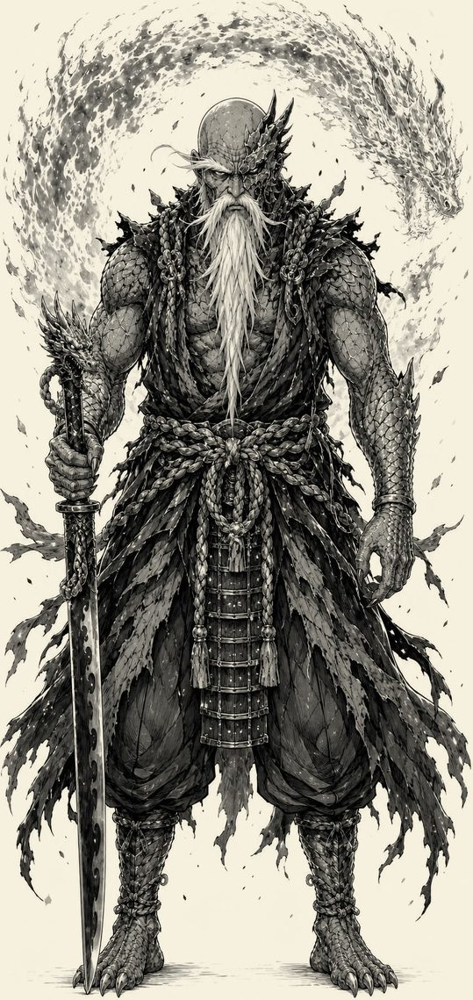
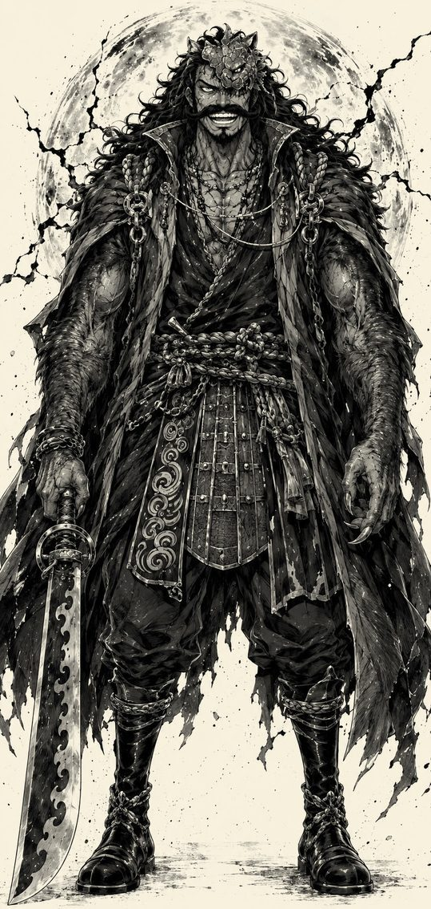

Genryūsai Yamamoto
vs Gol D. Roger
Heat comparable to the core of the Sun, against a blade that stood up to Whitebeard. Neither of them pulls a punch — holding back is not on the table.
Complete duel, verdict included — freeThe rules of this duel
A register of stellar heat and absolute sovereignty — the clash of the two founders. Objective — total neutralization. Unlike most duels in this volume, neither man enters this fight intending to hold back: one judges, the other never backs down.
Ground
A dead volcanic island, amid a restless ocean. Cracked basalt ground, columns of black rock, no inhabitants, no life to protect — a place already marked by fire, as if waiting for this kind of encounter.
Victory condition
Total neutralization.
Canon snapshot — Yamamoto
Bleach (Tite Kubo, 2001–2016), Thousand-Year Blood War: the Captain-Commander of the Gotei 13 at full mastery of his Zankensoki and his Bankai, Zanka no Tachi, deployed across its four cardinal points. Founder of the Gotei 13 over two thousand years ago. He still bears the burns of an earlier sacrifice — Wonderweiss Margela's explosion, which he chose to absorb with his own arms to spare the surrounding area — and never had them treated. His Bankai's destructive potential, meanwhile, remains entirely intact.
Canon snapshot — Roger
One Piece (Eiichirō Oda, 1997–), after conquering the Grand Line and finding the One Piece at Laugh Tale, a few years before his voluntary surrender at Loguetown, and before the incurable illness that will eventually take him weighs on his movements. No Devil Fruit: all his power comes from his body, his Supreme-grade sword Ace, and a mastery of all three forms of Haki taken to a level few men have approached — including Conqueror's Haki, able to bend entire wills by presence alone.
The fighters
Before Yamamoto, the Shinigami were just a scattered multitude of blades. After him, they became an institution. Founder of the Gotei 13 and Captain-Commander for over two millennia, he trained or saw the birth of nearly all the great captain lineages of Soul Society, and remains, to this day, the absolute benchmark of power in his world.
His zanpakutō, Ryūjin Jakka, is the oldest known fire-type zanpakutō in Soul Society. In its released form, it reduces to ash whatever it touches. In its ultimate form, Zanka no Tachi, Yamamoto no longer produces visible flame: he becomes its source. It's a weapon he almost never draws, given how hard the collateral damage it causes is to contain in an inhabited place.
The founding itself deserves to be told without repainting it. A thousand years ago, Yamamoto doesn't gather guardians: he brings together Seireitei's most dangerous individuals into a troop that carries the name Gotei but butchers far more than it defends. He also founds the Shin'ō Academy, which gradually turns that pack into an army, and most of the great captains into students.
And he has already won a war of this scale. A thousand years earlier, he faces Yhwach, the Quincy emperor, beats him, but doesn't finish him — a failure that will come back to haunt Soul Society centuries later. Yhwach himself will say of that Yamamoto that he was a demon, ready for anything, treating humans as expendable pawns. Only once peace was won did the old man begin living by the honor he's credited with today. The one who faces Roger is the second man, not the first.
Yamamoto isn't a cruel man, but a man who has learned, over two thousand years, that some things must burn for the rest to stand. He still carries, never having had them treated, the burns from a choice he made to protect innocents — a detail that says a great deal about the man behind the title.
Roger never needed a Devil Fruit to become a legend. The first man to conquer the Grand Line and find the One Piece at Laugh Tale built his reputation on three things alone: his sword, his willpower, and a laugh that made emperors tremble. His Conqueror's Haki is the kind that bends ordinary wills just by manifesting; his Armament Haki, pushed to its most advanced degree, lets him strike inside a body without even breaking its surface.
He fought Whitebeard — the strongest man in the world — in a duel that unleashed a storm for three days and three nights without either man yielding. He's one of the rare known beings to hear the Voice of All Things.
The bounty the World Government put on his head says enough about what he represented: 5,564,800,000 berries, the highest bounty ever recorded, one no pirate has topped since. He's also the only man to have completed a full circuit of the world and reached Laugh Tale, the Grand Line's final island — something no fleet, no navy, no emperor had managed before him.
What remains is what later events reveal about the man stepping onto the basalt here. Roger will never be captured: he'll turn himself in, knowing exactly what awaits him at the end. An opponent who chose the moment of his own death isn't one whose tempo is easily dictated in a fight.
But Roger also secretly carries the weight of an illness nothing can cure. This duel takes place before that weight becomes decisive — but the shadow is already there, somewhere behind his smile.

The table
| Criterion | Yamamoto | Roger |
|---|---|---|
| Physical strength A bare-handed Sōkotsu against an arm that held three days against Whitebeard. | 9 | 9 |
| Speed / reflexes Two thousand years of swordsmanship don't make the legs any younger. | 7 | 9 |
| Resilience / endurance The criterion that gives the pirate his one real grip on this duel. | 8 | 9 |
| Destructive power / range Fifteen million degrees isn't compared, it's imposed. | 10 | 8 |
| Combat technique One codified an entire school; the other outlived everyone who applied it. | 8 | 9 |
| Perception / tactical intelligence Two combat readers of equal finesse, by opposite paths. | 8 | 8 |
| Willpower / mental fortitude Neither has ever bent before anything. | 10 | 10 |
| Duel factor (Reiatsu against Haki) Two energies that never had to meet — the duel's convention forces them to. | 9 | 9 |
| Total / 80 | 69 | 71 |
The numerical gap is nearly nonexistent and barely tilts toward Roger, 71 to 69, carried by a speed, an endurance, and a swordsmanship that have nothing to envy anyone in this volume. But this board only imperfectly captures one thing: Yamamoto's destructive power isn't just another number, it's a victory condition apart. If he manages to establish Zanka no Tachi without being interrupted, the fight changes nature — it's no longer a duel of comparable techniques, it's a judgment. The whole question of this clash rests on that exact instant: does Roger have time to finish it before that judgment falls?
What each one can do
Ryūjin Jakka (Shikai)
The oldest known fire-type zanpakutō in Soul Society. A simple blazing edge reduces to ash whatever it touches and generates walls of flame at will.
Sōkotsu (Hakuda)
A bare-handed strike powerful enough to break an Espada — Yamamoto proved it finishing off Wonderweiss Margela without ever drawing Ryūjin Jakka.
Zanka no Tachi, Higashi: Kyokujitsujin
Concentrates all the heat at the blade's tip. Not burning in the literal sense — it reduces to ash whatever it touches, instantly, without a trace.
Zanka no Tachi, Nishi: Zanjitsu Gokui
Wraps the body in heat of at least 15,000,000°C, comparable to the Sun's core. Dries out the air across several hundred meters and makes any direct approach fatal.
Zanka no Tachi, Minami: Kaka Jūmanoku Daisōjin
Raises the ashes and bodies of every enemy Ryūjin Jakka has struck down across the centuries to fight at his side.
Zanka no Tachi, Kita: Tenchi Kaijin
A ranged slash that fully incinerates its target.
Hadō 96: Ittō Kasō
A forbidden Kidō spell, already used once with his own burned arm as a catalyst.
Ace's blade
One of the twelve Saijo Ō Wazamono, the Supreme-grade blades. A weapon that stood up to Whitebeard for three days and three nights without breaking.
Advanced Armament Haki
Ranged emission and internal destruction: Roger can strike without contact, or inflict massive internal damage with no surface wound.
Observation Haki
Fine anticipation of enemy movement and intent, honed by a lifetime challenging the world's most dangerous men — short of the literal precognition of rare wielders like Katakuri.
Conqueror's Haki
A sovereign-grade will, able to knock out ordinary opponents and strike a high-level enemy's resolve directly. Its large-scale version was only shown once, in tandem with Garp: this sheet grants him only its individual version.
Legendary endurance and willpower
A body that took three days and three nights of combat against the world's strongest man without retreating.
The asymmetry
Yamamoto wins if he turns the duel into a thermal judgment.
— two sovereignties that know no third way —
Roger wins if he imposes his tempo before the sun rises.
Canon boundaries
During the Fake Karakura arc, well before the Thousand-Year Blood War, Yamamoto faces Wonderweiss Margela, an Aizen pawn who absorbed part of Ryūjin Jakka. He finishes him off bare-handed, both arms intact, with a Sōkotsu that literally tears both his own arms apart — proof of a raw physical strength that has nothing to envy his zanpakutō abilities.
It's only after that victory that Wonderweiss's defeated head explodes, releasing its stored energy: Yamamoto then chooses to absorb the blast himself with his own arms to spare the surrounding area, which come out of it severely burned, along with part of his face. He'll never have them treated — a choice that will later earn him Yhwach's direct criticism. The precise mechanism, however, remains the most generally accepted explanation rather than a line quotable word for word from the manga: for a Shinigami, a damaged limb would complicate reiatsu control. This sheet takes that consequence seriously without presenting it as more certain than it is — the Bankai's potential isn't reduced, but the control needed to deploy it cleanly might be.
The only canon episode where a truly massive-scale Conqueror's Haki is shown on Roger's side dates from the God Valley incident — and it's a joint effort with Monkey D. Garp, a two-man concentration of will that leaves both of them on the ground, rescued at the last moment by their crews, Rayleigh chief among them. Nothing indicates Roger can reproduce that precise level solo, at will, at no cost. This sheet grants him an exceptional individual-level Conqueror's Haki — largely enough to strike an opposing spiritual pressure — without lending him God Valley's "tandem" version as if it were an ordinary personal tool.
Neither canon accounts for an interaction between a Shinigami's spiritual pressure and a One Piece user's Haki. This sheet adopts as a necessary convention that Roger's Haki — armament, observation, conqueror's — can perceive, touch, and strike Yamamoto's spiritual body as though it were ordinary matter. This convention lets the duel exist; it doesn't, however, let Haki nullify a purely physical fact like the ambient temperature generated by the Bankai, which isn't an attack but a property of the environment around Yamamoto's body.
The name "Kamusari," translated as "Divine Departure," designates in the manga the technique revealed by Shanks against Eustass Kid at Elbaf — not a named attack of Roger's own. What canon does show is a flashback in Chapter 966 where Roger, in a friendly, non-hostile moment, pushes Kozuki Oden back a few meters with a simple sword strike: the scene carries no attack name shouted or written, that name only appearing on the page much later, with Shanks. Oden, on that occasion, is neither Roger's second-in-command nor his opponent — simply a crewmate known for his strength. This sheet keeps the principle of the gesture, a cutting strike charged with Conqueror's Haki able to strike without direct contact, without giving it a name the manga attributes to someone else.
Ranged emission and internal destruction through Armament Haki are well-established applications in One Piece's recent canon — but shown on other wielders, Katakuri or Luffy at the very end of the saga, not on Roger himself on the page. Nothing indicates he's incapable of it: his three-day, three-night duel against Whitebeard, which ended in a draw, makes the hypothesis consistent with his level. But this sheet treats it as exactly that — an extrapolation consistent with his rank, not a directly shown feat.

The two scenarios
The island has stopped breathing. Roger arrives first, hands in his pockets, a grin that never quite leaves his face. Yamamoto waits, motionless, Ryūjin Jakka still sealed at his hip. "You look tired, old man." — "I'm two thousand years old. Fatigue stopped being news a while ago."
The first exchange is a probe, not a battle: Roger tests a horizontal strike charged with measured Haki, which Yamamoto deflects with the flat of his sheath without drawing. "That wasn't an answer. That was a question." Roger doesn't need to be told twice: he unleashes a flurry of Armament Haki-soaked strikes, each powerful enough to split a mountain. Yamamoto finally draws, parries, retreats, parries again — for the first time in decades, he feels real physical pressure.
So he answers. "Reduce it all to ash." The Shikai ignites; a wall of flame surges toward Roger, who doesn't retreat: he cuts the blaze in two, his Armament Haki crackling against the heat. But a fringe of flame licks his forearm — the fight's first mark, almost nothing.
That's when it turns. Yamamoto raises his blade to follow up — and his hand shakes. A fraction of a second, but enough: his reiatsu, poorly channeled through his marked arms, refuses to obey for an instant. His Observation Haki catches the hesitation before Roger even understands it himself. "So it's true, what they say about your arm."
He doesn't waste a second. He surges into the opening, Ace charged with a Conqueror's Haki that bends the air itself. The strike lands — not fatal, but deep, a gash that cuts across the old captain's shoulder and forces, for the first time, a knee to bend. Roger has a real opening. He knows it. He presses.
But Yamamoto, on one knee, closes his trembling hand around the hilt with a resolve nothing — not even two thousand years of fatigue — has ever worn down. "An arm that obeys poorly isn't an arm that refuses. Bankai."
The air freezes before the word is even finished. The island's humidity evaporates in a single breath. Roger feels the heat scorch his skin before he's even moved — Zanjitsu Gokui has just settled in, and he hasn't had time to retreat.
He tries anyway to close the distance, Conqueror's Haki projected forward to strike without contact, refusing to let this invisible wall dictate the tempo. The wave hits Yamamoto full-on — the old captain absorbs it, the flesh of his already-wounded arm smoking under the impact, but he doesn't retreat. "Not enough, kid."
Roger understands, a fraction of a second too late, that approaching within three meters of a body carried to fifteen million degrees is no longer a matter of technique. His Haki armor starts to crack, like varnish giving way.
Yamamoto raises his charred blade, no visible flame, just a heat that warps the air. "Zanka no Tachi, Kita. Tenchi Kaijin." A line of pure disintegration splits the space between them. Roger cuts, deflects what he can with his Conqueror's Haki — but it's no longer a blade he's facing, it's a physical law. The gash passes through him, hot enough to leave no blood, only ash scattering in the settling wind.
Yamamoto stays standing a long while, alone amid the molten basalt, before sheathing his blade. "You were right about my arm. It wouldn't have saved me, if you'd struck a second sooner."
Same island, same basalt silence — but this time, it's Roger who decides, from the first step, that this duel won't be settled in a single exchange. He doesn't charge: he circles, slowly, forcing the Captain-Commander to turn with him. "Not in the mood to run toward your fire, old man. Let's walk instead." — "Patience has never saved anyone against Ryūjin Jakka."
The first real exchange, when it finally comes, is long — not an explosion, a conversation of blades. Ryūjin Jakka bursts into a wall of flame; Ace splits it in two with a Haki-charged backhand. Roger closes the distance, and the fight settles into blow for blow, with neither giving ground.
Yamamoto is slower than him, but every parry carries the weight of two thousand years of swordsmanship. Roger has to force every opening instead of finding one — and that's his calculation: a man who only draws his Bankai as an absolute last resort, given how hard its damage is to contain, hesitates to commit to it as long as another way out seems possible. Every minute gained is a minute the endurance gap works for Roger.
The exchange stretches on. Five minutes. Ten. The volcanic rock cracks under their footing. Yamamoto begins, just barely, to breathe harder between parries — and that's when Roger feels it, beyond the fatigue: a faint hesitation in the wrist, a grip closing a fraction of a second too late. "Your arm. And your breath too, unless I'm mistaken."
Yamamoto doesn't answer — he speeds up, refusing to let the fight's length work against him. A bad call, or rather: the only one he has left. Roger targets that breaking point, stringing strike after strike to never let him stabilize his grip. A gash opens on the already-marked forearm: the old wound reopens, literally.
The Captain-Commander takes a step back, for the first time. Then straightens, jaw clenched, knowing he no longer has the luxury of waiting. "Bankai."
Roger feels the world change before he sees anything. The air freezes, the humidity vanishes. But something's off — the heat that should engulf him doesn't reach full intensity, like a fire lit after a long effort, by a hand still bleeding. Zanjitsu Gokui flickers, just for a second.
That's all Roger needs. He doesn't retreat — he charges, refusing to let that reprieve close, Conqueror's Haki concentrated into a single cutting motion through the thermal field's instability. The heat still scorches the skin of his arm, but Zanjitsu Gokui, imperfectly stabilized, doesn't vaporize him the way it would have at full power, on a fresh body, in the duel's first instant.
Yamamoto feels him approaching, raises his charred Ryūjin Jakka to strike point-blank — "Kita. Tenchi Kaijin" — but the motion carries the double mark of a hand that obeys poorly and a body that's already given too much. The disintegration line veers slightly off. Almost nothing. Almost enough for Roger, who slips out of its path.
"You aim well, old man. But aiming well, out of breath and with a shaking hand, is still aiming crooked."
He's already inside the space Yamamoto just opened. Ace, charged with every ounce of Conqueror's Haki he can pour into it, strikes not to cut but to hit — a shockwave that passes through the Captain-Commander's guard and makes him bend, for real this time.
Roger rests the point of Ace under his throat, without pressing. "We stop here. You gained in judgment, over two thousand years. Today, it's freedom that gained in patience." — "Then let the world remember both lessons."
The verdict
scenarios out of 10
The numerical board is nearly balanced, 71 to 69, carried by a speed, an endurance, and a swordsmanship that have nothing to envy anyone in this volume — and by a Yamamoto whose raw physical strength, proven bare-handed against an Espada, is nothing like a diminished old man's. But this near-tie doesn't tell the whole story: the moment Zanka no Tachi is established without interruption, the duel changes nature. It's no longer a clash of comparable techniques, it's a matter of scale — and at that scale, no known Haki has ever demonstrated the ability to nullify a temperature of fifteen million degrees.
Roger nonetheless keeps a thoroughly real chance, and it's nothing symbolic: four times in ten, carried by two levers this sheet takes seriously rather than ignoring. Yamamoto's never-treated burn is an indisputable canon fact; its precise consequences on reiatsu control follow the most generally accepted explanation, without being a line quotable word for word from the manga. Add to that an even sturdier lever: the endurance gap, where Roger clearly dominates, and Yamamoto's well-established reluctance to engage his Bankai lightly. If Roger refuses the brief exchange, stretches the fight out, and strikes exactly as Zanka no Tachi needs to stabilize, he can turn an announced execution into a fight he wins by the skin of his teeth.
What makes this duel bigger than the sum of its numbers is what the two men embody. Yamamoto founded an order built on judgment and sacrifice — including his own, right into his own flesh, never repaired. Roger never wanted to found an empire: he lit an era, through the sole force of a will that asks no one's permission. One burns to keep a world standing. The other burned to set it in motion.
Over to you
If Yamamoto had agreed to have his arm treated — the very thing Yhwach faults him for never doing — does this duel tip almost entirely to his side? And conversely, does Roger's Conqueror's Haki, on its own, without the Garp reinforcement his only demonstration at this scale required, really suffice to interact with a spiritual pressure of a different nature than his own?
If you disagree, we did our job. Pass the sheet to someone who'll disagree even more.
The same sheet, laid out for print and for sharing.